stetiger Weg auf der Lexikographischen Ordnung des Einheitsquadrats
1. Satz
Sei 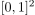 mit der lexikographischen Ordnung gegeben. Dann gilt für einen Weg und sein Bild 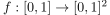, dass 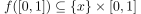 für ein 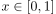
2. Beweis
Angenommen nicht, d.h. es existieren  mit $ \{x\} × [ax,bx], \{y\} × [ay,by] ∈ f([0,1])$ für 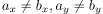.
Dann gilt nach dem Zusammenhang eines Bild einer zusammenhängenden Menge, dass für 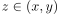 gilt 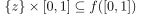, da sonst das Bild nicht zusammenhängend wäre.
Betrachten wir die offenen Mengen 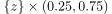 für
Es liegen Überabzählbar viele vor und nach der Aussage über einen Nicht-Separablen Raum und überabzählbar viele disjunkte, offene Mengen folgt, dass 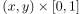 nicht separabel ist.
Dies ist ein Widerspruch zur Aussage über das Bild eines Weges als separable Menge
mit $ \{x\} × [ax,bx], \{y\} × [ay,by] ∈ f([0,1])$ für 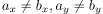.
Dann gilt nach dem Zusammenhang eines Bild einer zusammenhängenden Menge, dass für 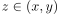 gilt 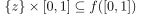, da sonst das Bild nicht zusammenhängend wäre.
Betrachten wir die offenen Mengen 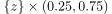 für
Es liegen Überabzählbar viele vor und nach der Aussage über einen Nicht-Separablen Raum und überabzählbar viele disjunkte, offene Mengen folgt, dass 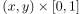 nicht separabel ist.
Dies ist ein Widerspruch zur Aussage über das Bild eines Weges als separable Menge